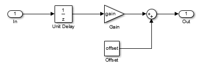

| Outports
| |
| OUT | Signal to frame program |
| Mask Parameters | |
| ts_fact | Multiplication factor of base sampling time (in integer format) |
| Gain | Gain value used in simulation |
| Offset | Offset value used in simulation |
Serves as interface to the frame program. The output of this block is intended for simulation purposes and can be left unconnected if not used. Also the parameters Gain, and Offset are only used during simulation. The schematic for simulation can be seen in the figure below. The Unit Delay block is only used during simulation and should reflect the time delay caused by a discrete controller.
Note: Currently, Gain and Offset parameters are only available in Matlab/Simulink.

| int8 | 8 Bit Fixed Point |
| int16 | 16 Bit Fixed Point |
| int32 | 32 Bit Fixed Point |
| float32 | 32 Bit Floating Point |
| float64 | 64 Bit Floating Point |